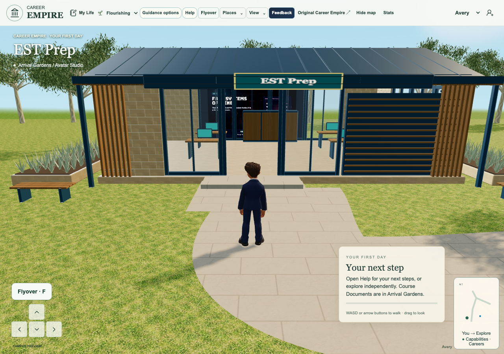
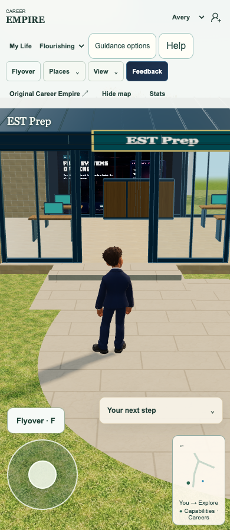
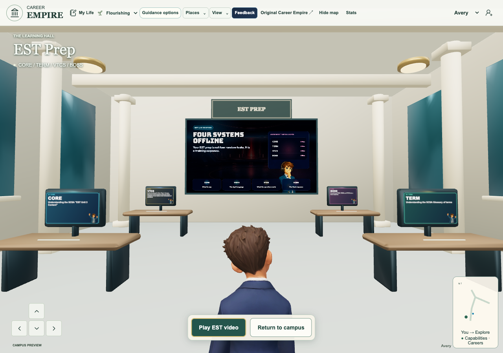
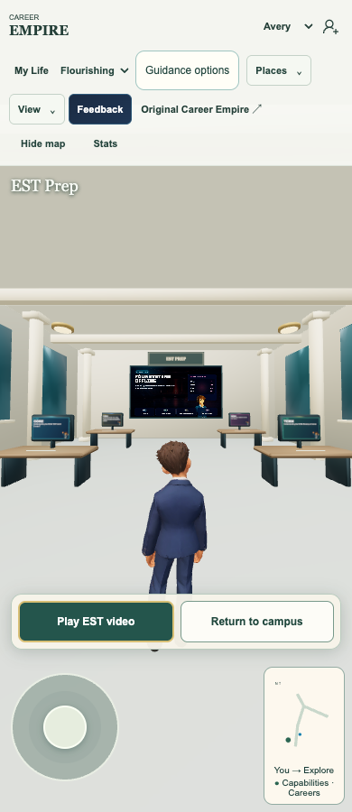

EST rear window and return outside entrance
Requested correction
Tania rejected the front-window placement in live1a7faf6 and explicitly asks for the back window. She also says Return to campus must leave the avatar just outside EST rather than at the campus starting point. This is the bounded successor owned by the existing Integrate and test Initiative integrator; explicit publication approval persists.
Rear glazing
The unchanged workplace model rear panes span x13.124–18.877, y.36–3.12, z22.009–22.021. The existing5.753×2.76 backing moves to16,1.74,21.94; the full-height16:9 video face moves to16,1.74,21.935. Front glazing atz14.009 remains clear. Native exterior captures show room depth, foreground cabinet and frames retained; the cabinet naturally occludes some rear film from outside. No furniture, door, wall, collision or media content is removed; depth testing remains enabled. The separate indoor screen and original video/texture/material remain unchanged.
Return outside EST
The common destination function previously sent all destinations to arrival when campusReady was false. EST now keeps its existing destination16,12.5 and camera yaw even in that early state. This requires no wait for wider campus preparation and preserves the normal entry/reentry route. Both visible EST Return and the common campus-return control use this same correction.
Qualified checks
392 unit tests across83 files pass. Four focused wall-video geometry, lifecycle, retry and real-screen gesture tests pass.355 runtime hashes and107 reachable imports pass. Actual isolated headless native Chrome1280/390 verifies physical walk-in, both immediate entry actions, all four loaded monitor cards/celebrating guides, audible cinema/close, real mouse/touch wall-screen activation and keyboard/touch return at16,12.5. Zero page errors.1920 capture retains all four monitors. The first new async unit assertion ran before its VM microtask; retained failure corrected by awaiting completion, with actual product/browser result already passing.
Limits and preservation
Native fullscreen remains denied in headless; actual Safari, physical touch, classroom and Tania appearance acceptance remain separate. Prior broad CI failures in admin-entry, legacy wardrobe and old Chapel guide remain recorded; no all-CI-green claim. Archon, Notes, Chapel, source PDFs, four teaching cards, entry controls, cinema and separate CI are preserved. Portfolio153 remains locally qualified on predecessor1a7faf6, unpublished, and will be serially rebased after this correction. Chapel scene mismatch is being investigated; no scene/artwork replacement or button-only assumption is included.
Privacy and teaching scope
No new data collection, account, role, storage, retention, logging, telemetry, provider, permission, backend or host. No curriculum edition, coverage, scoring, assessment, teacher service or mastery judgement changes. Existing public media only; reference screenshots stay private. Fictional guest/native game evidence only. School/ST4S acceptance remains separate.
Release status
Source-qualified only. Exact source review publication, genuine seven-file receipt, guarded normal game push and independent live checks are required before calling this published.

Actual qualified native scene. Publication and user acceptance separate.
Actual qualified native scene. Publication and user acceptance separate.
Actual qualified native scene. Publication and user acceptance separate.
Actual qualified native scene. Publication and user acceptance separate.playable-3d/app.js 100644:ca2d5b9abb81842eb9b9a208723fa3fcd714de31
playable-3d/est-wall-video.js 100644:2f176106c3652839bf7b06303cb7fe4ad4ee7502
playable-3d/guest-shell.mjs 100644:730a683efcd0d09fb7939287b196fb40799672a7
playable-3d/index.html 100644:a7d11b1c889c52b581d4b1acb6ecbaa220b89e00
playable-3d/release-manifest.json 100644:6cd7c93eef07cb5136489ab76102247be6886bd7
playable-3d/world.js 100644:945dbd528fa4b177a9ac69f758a21f0d2f0481d5
tests/unit/est-presentation.test.mjs 100644:5ec0a07dfb6ef67b70b333e533119936418e0fe3